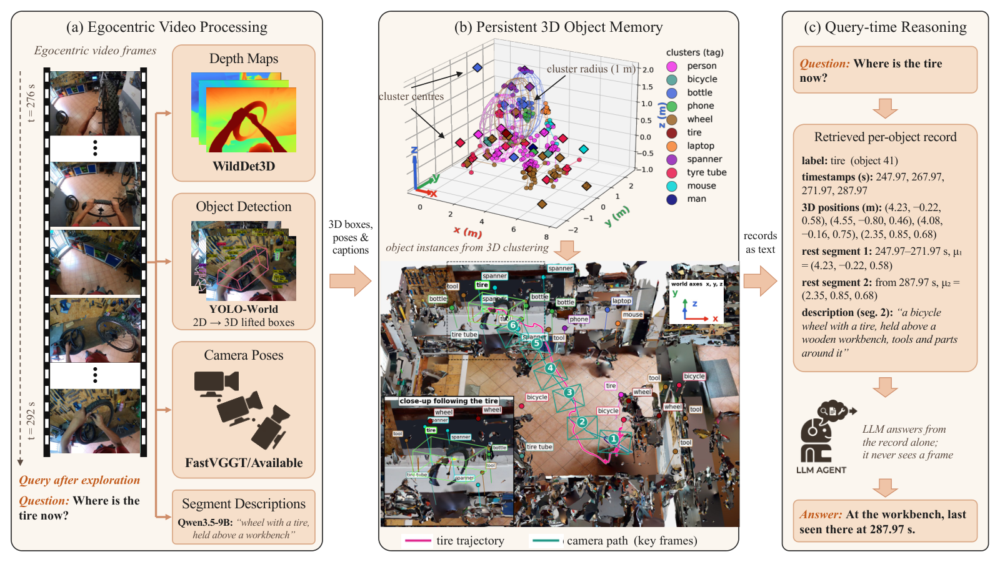
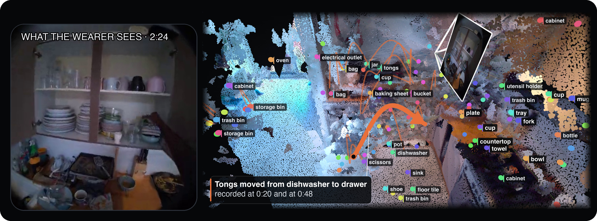
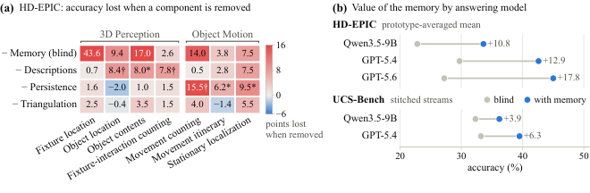

Problem Setup
01 · The Question: What Must Memory Preserve?
第一视角视频中的对象可能离开视野，问题却在之后才出现。逐帧保存图像会让查询重新访问视频；只存对象类别和一个位置，又无法回答对象是否移动、里面有什么或放在哪个表面上。Ledger 研究的是一个更具体的记录：不看原图时，哪些历史证据足以回答空间和对象运动问题。
作者将 memory construction 与 query-time reasoning 分开。construction 是离线的，输入采样视频、相机轨迹和检测结果；query 时只把检索到的对象记录交给语言模型，模型不再读取原始帧。这个设置把表示、检索和回答器的作用拆开测量。
Method
02 · From Video to Persistent Records

Shravan Chaudhari et al. · 2026 · Paper: CC BY 4.0 · Unmodified original figure · Paper & Caption ↗
每 4 秒采样一帧，单段最多 1,200 帧；Qwen3.5-9B 给可见对象命名并合并同义词，形成每段最多 80 个标签。YOLO-World 进行开放词汇检测，VQ3D 还评估 SAM 3。相机位姿来自设备轨迹或 FastVGGT；96 帧窗口、16 帧重叠用于估计并对齐，单目结果再通过静态对象的尺度关系恢复 metric scale，无法恢复时保留 scene units。
检测框通过深度和相机变换提升为三维点，跨帧关联后形成对象轨迹。记录对象不要求被手接触，因此固定装置和未交互对象也能进入 memory。这个选择直接针对“只记录 hand-object interaction 会漏掉后来有用的物体”的问题。
Mechanism
03 · Rest Segments and Persistence Rule

Shravan Chaudhari et al. · 2026 · Paper: CC BY 4.0 · Unmodified original figure · Paper & Caption ↗
对象的时间序列被划分为 rest segments：同一对象在相近位置的一组观测属于同一段，新的段表示对象发生了移动。位移并不由单次跳变触发，而要有多次连续观测支持。论文的默认阈值为 0.3 m、连续证据 k=3；随后从各段生成短 contextual description，记录例如容器内容或支撑表面。
这个规则把“检测坐标抖了一下”和“对象真的被放到别处”区分开。作者报告，单纯提高距离阈值并不能解决两者重叠：一半标注移动短于 0.8 m，而定位误差的 95 分位为 0.84 m；0.3 m 加三次连续证据时，movement counting 在 ±1 范围内的比例从 57.3% 提高到 67.4%，去掉 persistence 会损失 15.5 个百分点。代价是短暂移动可能不会被记录。
Inference
04 · Query-Time Retrieval and Answering
查询先识别对象，再从记录中取回位置、rest segments、移动历史和描述。对于带框的问题，系统用最接近查询时刻的采样帧估计框的三维位置，按距离取回候选对象；回答器随后只读文本化记录。fixture-direction 问题还可把对象方向投影到水平面，用 12 点表示前方、3 点右侧、6 点后方、9 点左侧。
作者用 GPT-5.4 和 Qwen3.5-9B 作为 reader，主实验关闭 extended reasoning；GPT 每题约 1,750 输入和 231 输出 token。这个协议很关键：memory 的收益包含记录质量和 reader 能力，比较不同 memory 时必须固定 reader 和检索预算。
Evidence
05 · Experiments and What the Numbers Mean

Shravan Chaudhari et al. · 2026 · Paper: CC BY 4.0 · Unmodified original figure · Paper & Caption ↗
HD-EPIC 包含 2,400 个 3D Perception 与 Object Motion 问题。GPT-5.4 的 prototype-average accuracy 从 blind control 的 29.7% 到 Ledger 的 42.6%，Qwen 从 22.8% 到 33.6%；这些是相同问题配对比较，区间用按 prototype 分层的 2,000 次 bootstrap。VQ3D 的同一 44 个 clip 重建对比中，SAM 3 Ledger 在返回预测的 153/164 个问题上 median L2 error 为 0.99 m，<1 m 比例 51%。
组件消融显示，位姿参考系错误比对象坐标细化更影响方向问题：去掉 gravity leveling 会使 fixture-location 下降 29 个百分点，而三角化只带来约 2.2 个百分点整体收益。contextual descriptions 贡献约 4.9 点，persistence 贡献约 5.5 点。结果支持“记录什么”比单纯增加几何精度更重要的解释，但不说明该 pipeline 在在线建图时同样有效。
Discussion
06 · Failure Modes and Relation to Semantic Memory
跨场景 stitched streams 是主要失败点：检索会混入其他场景的记录，construction 的单场景假设也会在切换处丢标签；用真实边界限制检索可恢复约 3 个百分点，按场景单独建 memory 可恢复损失的一部分。对象关联还会拆分同一对象或漏检对象，所以 counting 和 event evidence 仍弱。
Ledger 的语义部分不是一个训练好的统一视觉语义 embedding，而是对象标签与短描述，由 Qwen3.5-9B 产生词表和上下文，再交给 reader。它说明语义记录能帮助回答“里面有什么、放在哪个表面”，但位置、相机朝向和事件时间仍必须保留。
对 LingBot-Map 式 streaming memory 的启发是把对象记录视为可查询的长期层，而不是把文字描述直接当几何状态。若在线化，需要增量关联、置信度和场景边界检测；否则离线构建的精度数字不能直接外推到实时系统。
Discussion
Reading Questions
Why does persistence help more than simply increasing the distance threshold?
定位噪声和短距离真实移动的范围重叠。连续三次位移证据利用时间一致性，能抑制一次跳变，同时保留较短的真实移动；代价是短暂移动可能被漏记。
What does the memory actually add to a VLM?
它把不可见时刻的对象位置、历史和上下文描述变成可检索文本，使 reader 能在无原图条件下回答；VLM 仍负责从记录中组合答案，不负责恢复未被保存的证据。
Can Ledger be called online?
论文的 memory construction 是 offline，视频先采样和构建记录，query 时再读取。因此它证明的是持久记录的有效性，不是在线增量写入的延迟或容量方案。
Which result is most relevant to semantic-geometric memory?
组件消融同时显示 contextual descriptions 和几何位姿都有作用；而跨场景失败说明语义检索必须受空间和场景约束，不能单独按类别合并对象。
References
Figures are reproduced from the paper under the arXiv CC BY 4.0 license; captions identify the original figure numbers.
Verified on 2026-10-16. Paper results refer to the linked versions. Repository references were checked on this date.